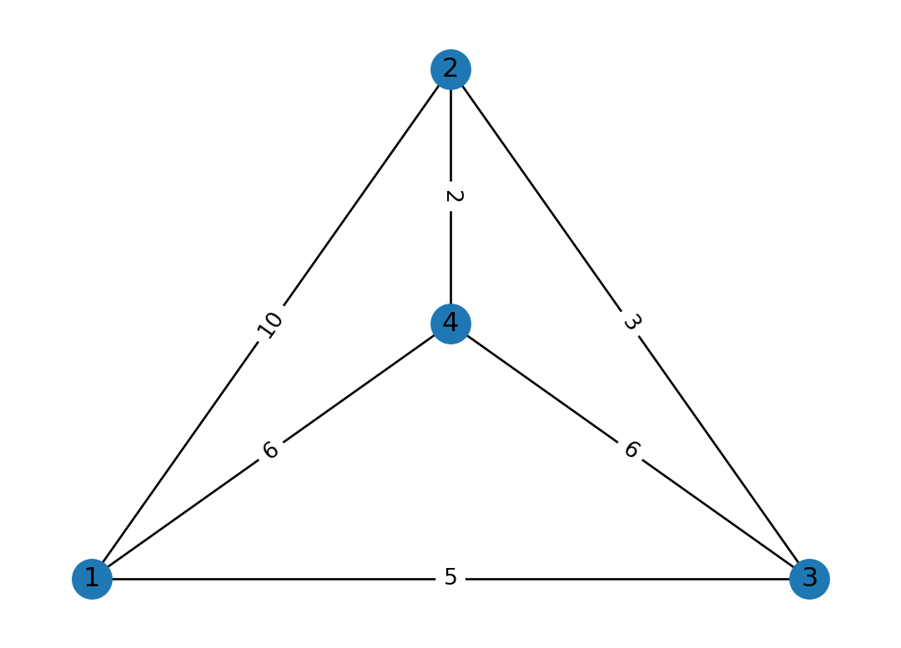
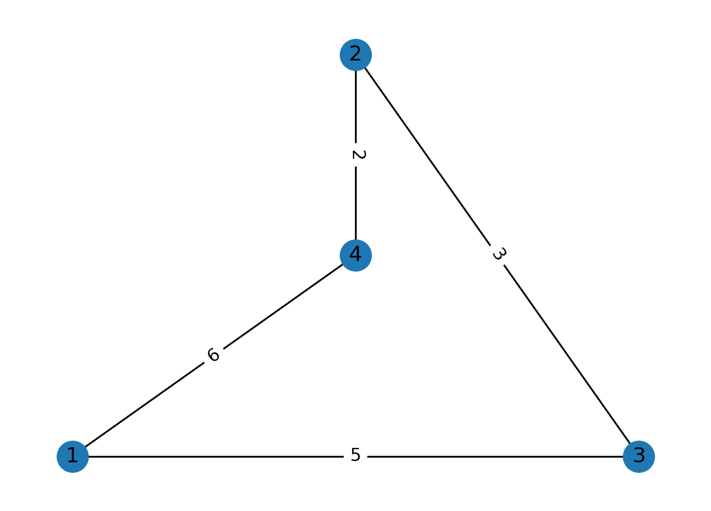

Code
import numpy as np
import matplotlib.pyplot as plt
r = np.arange(0, 2, 0.01)
theta = 2 * np.pi * r
fig, ax = plt.subplots(
subplot_kw = {'projection': 'polar'}
)
ax.plot(theta, r)
ax.set_rticks([0.5, 1, 1.5, 2])
ax.grid(True)
plt.show()
For any graph \(G\) a sparsifier \(H\) is a graph with far fewer edges that is similar to \(G\) in some useful way. While \(H\) is much easier to do computation on, it holds the same properties as \(G\), and therefore, it is a reliable way of doing approximate computation on \(G\). For example, if we are dealing with path-finding problems on a dense large graph \(G\), the set of sparsifiers used in (Chew 1989) can be used because they are guaranteed to have almost the same shortest path properties as \(G\).
For illustration, consider the following graph \(G\) with four vertices. The new graph obtained has far fewer edges but has the same set of shortest paths between any pair of vertices. This is a simple sparsifier that can be used for shortest path-finding problems and can be obtained via removing trivial edges \(w(u,v)\) such that the shortest distance between \(u\) and \(v\) is smaller than \(w(u,v)\).
import networkx as nx
import matplotlib.pyplot as plt
# setup the graph
G = nx.Graph()
G.add_nodes_from([1, 2, 3, 4])
G.add_edges_from([
(1, 2, {'w':10}),
(1, 3, {'w':5}),
(1, 4, {'w':6}),
(2, 3, {'w':3}),
(2, 4, {'w':2}),
(3, 4, {'w':6})
])
# setup plotting position of all vertices
pos={
1:(0,0),
2:(0.5,1),
3:(1, 0),
4:(0.5, 0.5)
}
# a simple networkx plotting function
def plot_graph():
nx.draw_networkx(G,pos)
labels = nx.get_edge_attributes(G,'w')
nx.draw_networkx_edge_labels(G,pos,edge_labels=labels)
plt.axis('off')
plt.show()
# before:
plot_graph()
# find the shortest path between any pair of vertices
shortest_paths = dict(nx.all_pairs_dijkstra_path(G, weight='w'))
for v in shortest_paths:
for u in shortest_paths[v]:
# if the edge from v to u has weight greater than the shortest path
# between v and u, then remove it
if v != u and len(shortest_paths[v][u]) > 2:
# remove edge from v to u if it exists
if G.has_edge(v, u):
G.remove_edge(v, u)
# after:
plot_graph()

On the other hand, (Benczúr and Karger 1996) for example introduces the cut-sparsifiers which are a class of sparsifiers that have almost identical cut weights for any set \(S \subset V\). In this report, we cover spectral graph sparsifiers which are a certain class of sparsifiers that have a tight connection with expander graphs and can approximate the Laplacian of a graph with high accuracy. Because of the close connection between graph spectral connectivity and edge connectivity introduced by Cheeger (Cheeger 1970) spectral sparsifiers were introduced by (Spielman and Teng 2004) and (Spielman and Teng 2011). Conventionally, these graphs are constructed using randomized algorithms where we pick a certain edge of an original graph with a probability. For example, if an edge is crucial to the connectivity of our graph, then it has high importance and should be picked with high probability. However, in this report, we will show that we can construct a sparsifier with a deterministic algorithm introduced in (Batson, Spielman, and Srivastava 2009) that has a tight connection with the Ramanujan bounds.
Furthermore, we will cover an important reduction from the graph sparsification problem to a matrix approximation problem which has been further exploder in many follow-up papers (Tat Lee and Sun 2015) and (Lee and Sun 2017). Moreover, this will give us the first deterministic algorithm for obtaining sparsifiers with linear edge count. That said, we have implemented the algorithm in Python and have tested it on a few graphs for illustration purposes.
Finally, we will focus our attention on running the algorithm on complete graphs. The sparsifier obtained from the complete graph will have high connectivity which resembles similarities with the expander graphs. Although the graph obtained from the algorithm is not regular, we will show that it has a lot of expander-like properties and we will draw a close connection with Ramanujan graphs.
Here we will cover some of the basic definitions that are used in the sparsification literature as well as some core concepts in linear algebra that will be referenced throughout the report.
Before everything, we should define what a spectral sparsifier is. A spectral sparsifier is a sparse graph that approximates the Laplacian of a graph with high accuracy. In other words, a sparsifier is a graph that has a lot of the same properties as the original graph.
Definition 1 A \(\epsilon\)-spectral sparsifier of a graph \(G = (V, E, w)\) is a sparse graph \(H\) such that, \[(1 - \epsilon) \mathcal{L}(G) \preceq \mathcal{L}(H) \preceq (1 + \epsilon) \mathcal{L}(G)\] where \(\mathcal{L}(G)\) is the Laplacian of \(G\) and \(\mathcal{L}(H)\) is the Laplacian of \(H\).
– TODO: two methods of spectral sparsification
– TODO: The lemma for \(\mathcal{O}(\frac{n}{\epsilon^2} \log n)\) sparsifiers and the question on how to obtain other spersifiers.
– TODO: recap of expanders
– TODO: expander mixing lemma
– TODO: a straight-up reduction from graph sparsification to matrix approximation with proofs
– TODO: Charged particle intuition
– TODO: What happens in the average case
– TODO: Leguerre polynomials
– TODO: bounding all the eigenvalues
– TODO: Quantizing the boundedness
– TODO: plotting the potential function
For a demonstration of a line plot on a polar axis, see Figure 2.
import numpy as np
import matplotlib.pyplot as plt
r = np.arange(0, 2, 0.01)
theta = 2 * np.pi * r
fig, ax = plt.subplots(
subplot_kw = {'projection': 'polar'}
)
ax.plot(theta, r)
ax.set_rticks([0.5, 1, 1.5, 2])
ax.grid(True)
plt.show()
– TODO: show the results of using the deterministic algorithm vs the randomized algorithm
– TODO: illustration of what happens in the algorithm iteratively on a complete graph.